Every great athlete knows that winning starts long before the match even begins — it starts in the mind. In here you'll explore the power of sports psychology: self-talk, focus, resilience, confidence, and emotional control, how the mind affects athletic performance. My goal is to help athletes — and myself — understand that mental strength is not something you’re born with; it’s something you build, something you train just like you train your body.
Self-Talk: The Voice That Shapes You...Or Breaks You
Every athlete talks to themselves — during matches, practice, training, and failure; but what matters is how you talk to yourself, what do you say to yourself when you are not playing the way you want to or when you lose a match, how do you react when you lose an easy point or miss a shot that could have been a winner, because if you're talking positively to yourself, saying affirmations constantly like'I can do this','I am strong and mentally tough', you rewire your brain in a high pressure situation during a match, into thinking that everything is alright, that everything is going your way and that you are perfectly capable of handling your emotions and reactions, which definitely, most absolutely will improve your performance during the match, especially in moments of pressure, like a match point, championship point; where most athletes find it difficult to stay calm and focused, and control their emotions and body language.
Because that is the difference between a winner and a loser in a match; the winner always finds a way to win, even if they are not playing their best by using their mind to resist and continue through hard times, frustration, anger, whereas losers, on the other hand, they let their emotions take over their mind, they don't control their body language, they show frustration, anger, anxiety, sadness sometimes, and that makes their opponent more and more confident, which will boost their performance whether or not they are playing their best, and this will eventually make them more confident in their skills and they can do anything, win in anything; in the end they'll win.
I am not saying that you should block your emotions, in fact you should acknowledge them, understand why you feel them, but should, absolutely not let them take over your mind, but, unfortunately, there are athletes that talk negatively to themselves, they keep saying phrases like 'I can't do this','This is too hard, I am not capable of doing it','I just don't know how to play','I am so bad', affirmations like these rewire your brain into thinking that you are not good enough, skilled enough, and that you can't handle high-pressure moments, you'll keep having doubts in yourself and you stop believing and trusting in your skills, which will worsen your performance during the match and make you crumble under pressure even if you have all the skills; you'll lose eventually.
The power of self-talk in sports performance.
Delusional Self-Belief:They'll Call You Crazy...Until You Prove Them Wrong.
World class athletes aren’t the ones who play it safe. They’re the ones who believe in a version of themselves that doesn’t exist yet. You have to be a little delusional to chase dreams that look impossible from the outside. That kind of belief makes people uncomfortable because it challenges everything they accepted as’’ realistic’’. But the truth is, every champion you admire once sounded crazy for believing they could become who they are today. Delusion is just faith with ambition attached to it.
When you start acting like your future self before anyone else sees it, you change the trajectory of your life. Most people wait for proof; the great ones move before proof exists. That’s where discipline meets destiny. In the space where belief feels too big and the dream feels too far. Let your vision scare you a little. That’s how you know it’s worth chasing.
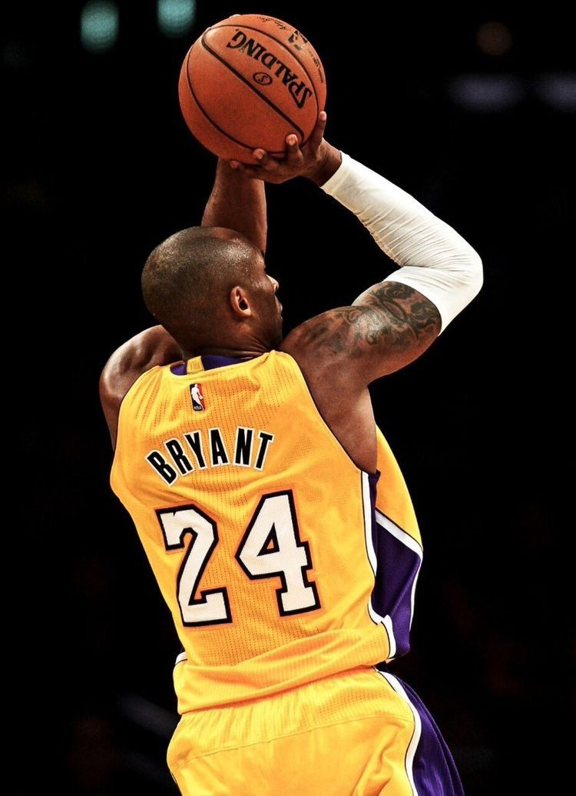
The Black Mamba
Kobe didn’t just train more-he became the Black Mamba. A cold, calculated assassin on the court. That wasn’t a nickname-it was a shift in identity. He didn’t want to compete. He wanted to destroy.
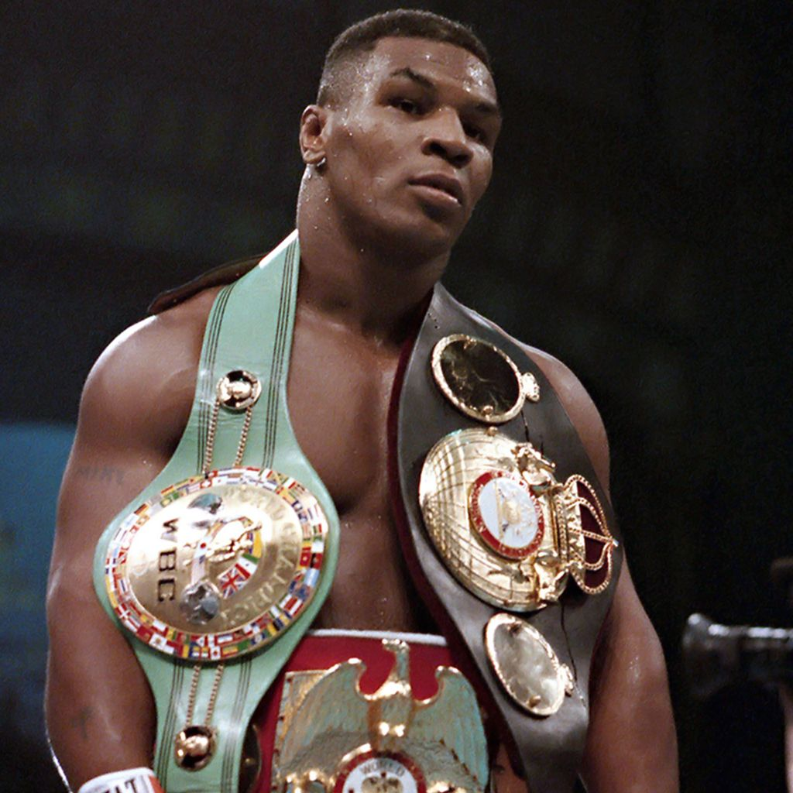
The Gladiator
Mike Tyson said when he entered the ring, he felt like a gladiator. He convinced himself no man alive could beat him. That belief didn’t come from reality. It came from delusion—a necessary one.
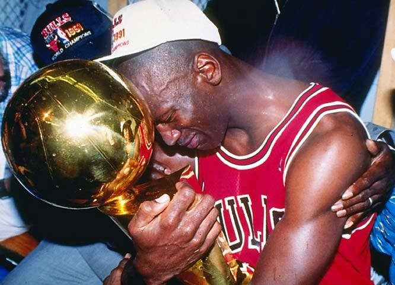
Untouchable
Michael Jordan wasn’t aiming to be great. He was allergic to losing. He created slights in his head just to fuel himself. He had to believe he was untouchable. Because the game at that level isn’t physical—it’s mental warfare.
The truth? No one becomes world-class by being balanced. The best in the world don’t casually pursue their craft. They obsess. They spiral. They become. It looks insane from the outside-because it is.
So, if people call you delusional for believing in yourself that hard-good. That’s the price of building someone unreal. That’s the mindset that changes everything. Lose your mind to the process-and watch who you become.
Visualization: The Key to Living up to Your Potential
Also known as mental imagery, visualization is a powerful tool that can help athletes achieve their goals. By creating vivid mental images and scenarios of successful performances, athletes can enhance their confidence, improve their focus, and develop a stronger sense of control over their actions. Visualization doesn't always have to be used in "successful performances", as Micheal Phelps once did, it can be used to imagine multiple case scenarios where maybe some things don't go as planned, but the difference here is that you also imagine the solution, like what would you do in X situation if Y problem occurs? And that's a really powerful way to stop overthinking during the actual game, match, etc, because you already know what to do during that situation, so instead of wasting time complaining that things didn't go your way, you'd execute your strategy for said situation and move on.
For most of you that may not know, the brain does not fully distinguish between real physical movement and imagined movement. Visualizing a skill fires the same neural pathways, motor programs, and muscle memory patterns used during actual play. And what that means is that when you visualize yourself performing a skill correctly, you're training your brain to perform that skill in real life.
Also, you can't just imagine the scenario, if you're also feeling the emotions! Even if you imagine the perfect success scene with all of the details... If you didn't also feel the emotions associated with it, it won't work as effectively.
Visuals
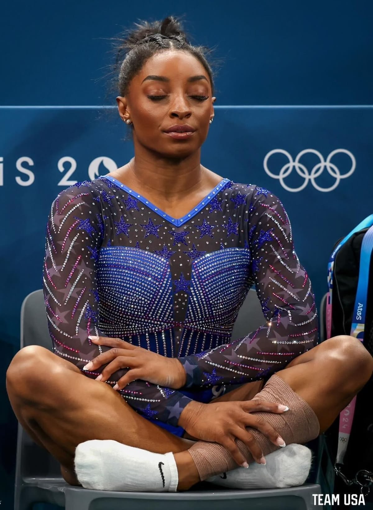
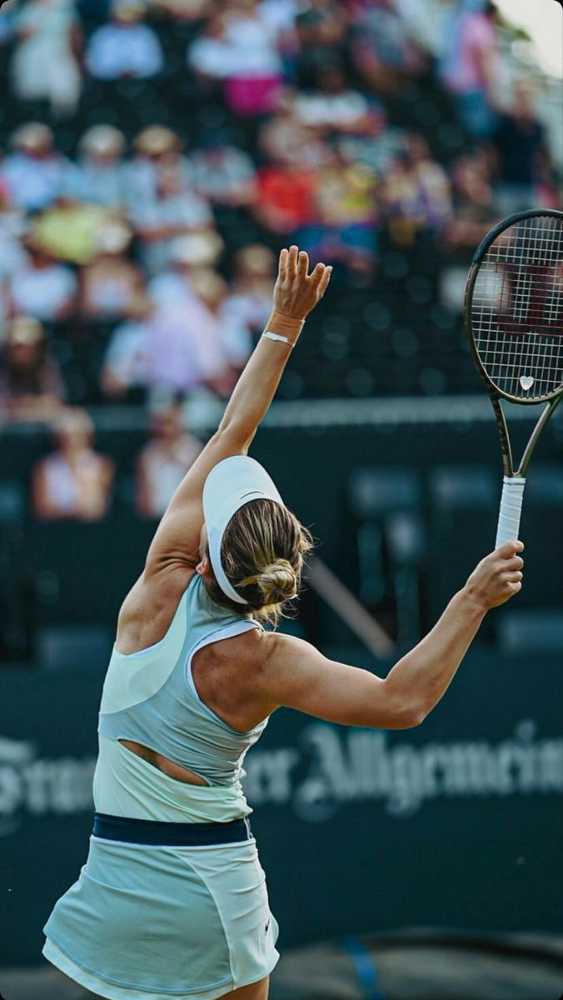
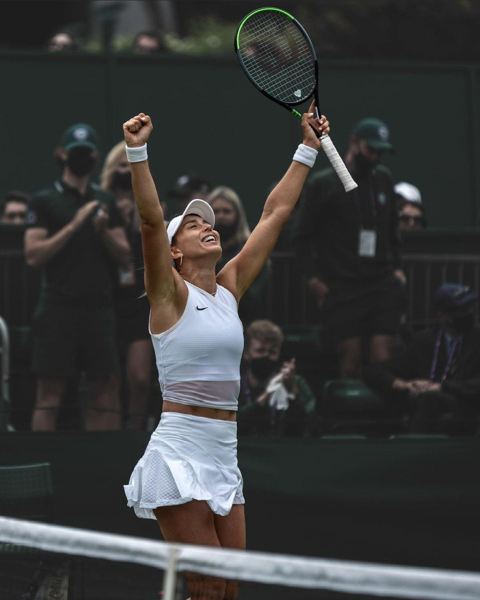
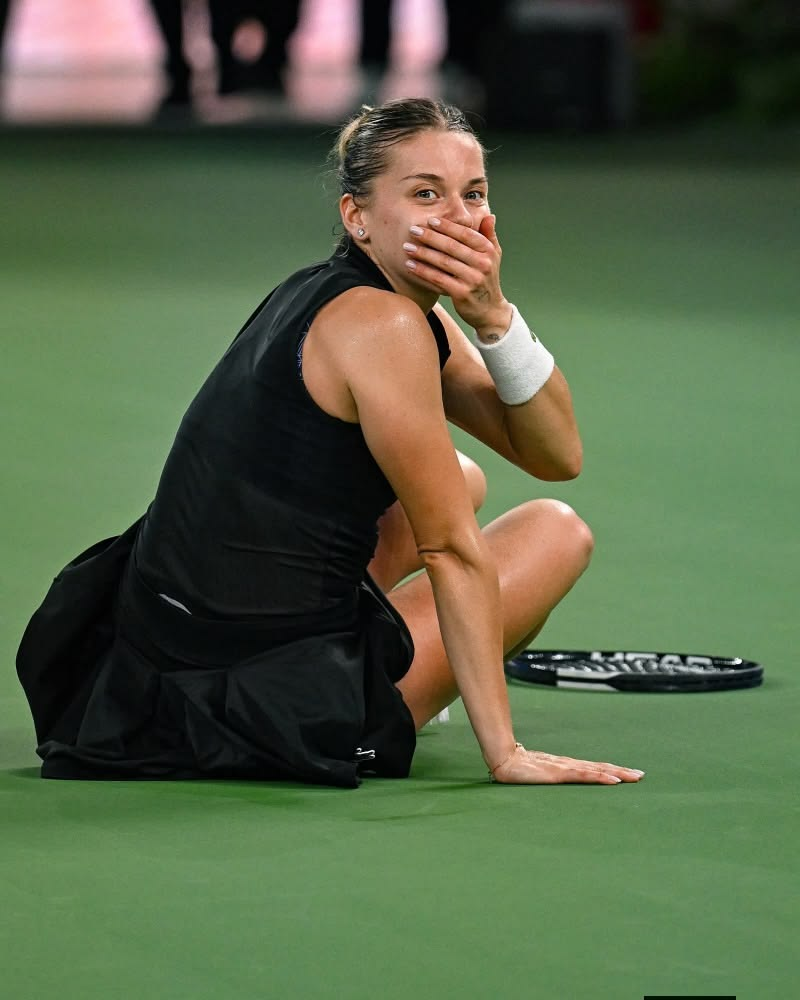
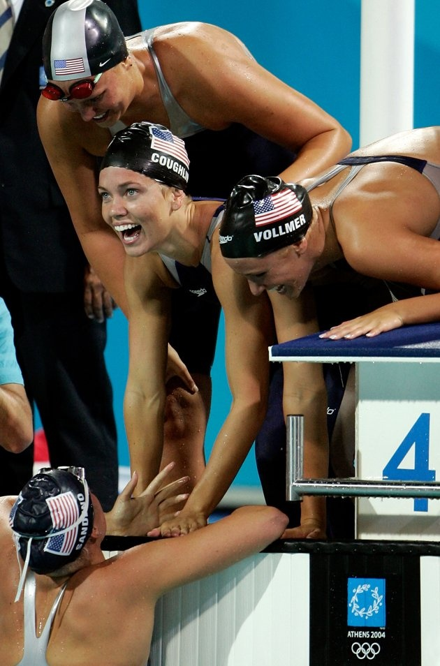
5 Steps to Build Mental Armor
Mental toughness is like a physical muscle—it requires consistent, deliberate training to grow. Here is a five-step protocol used by elite performers to build an unbreakable mindset:
- Controlled Breathing: Before every competition, practice "box breathing" (inhale for 4 seconds, hold for 4, exhale for 4, hold for 4). This physically forces your nervous system out of "fight or flight" mode and into a state of calm focus.
- Visualization: Spend 10 minutes daily visualizing yourself performing perfectly. Don't just see it—feel the texture of the ball, hear the crowd, and feel the muscle engagement. This primes your neural pathways for success.
- Process Over Outcome: Stop focusing on the final score. Instead, set "process goals" for every single play or rep, such as "maintain perfect form" or "keep my head up." This keeps you in the present moment where you have total control.
- Reframe Adversity: When things go wrong, change your internal dialogue. Instead of thinking "I'm failing," tell yourself "This is the test I prepared for." View pressure as a privilege and a chance to show your training.
- Post-Performance Review: After every game or practice, spend 5 minutes reviewing your mental state, not just your physical performance. Identify moments where you lost focus and plan how you will handle those same situations next time.
By following these steps consistently, you transform your mind from a source of doubt into your greatest competitive advantage.
The Champion's Playlist
Music can change your brain chemistry and boost your performance. Here are some songs that fire me up to perform at my best.
-
Freedom Pharrell Williams
-
Can't Hold Us Macklemore & Ryan Lewis
-
Headlock Hoodtrap Remix
The Pre-Game Checklist
Words of Champions
"I train like I've never won and compete like I've never lost."
Eileen Gu"I've failed over and over and over again in my life. And that is why I succeed."
Michael JordanMy Favourite Aesthetic Photos
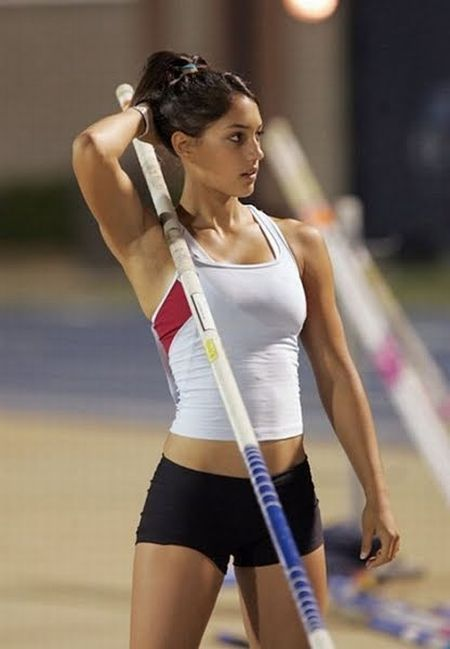
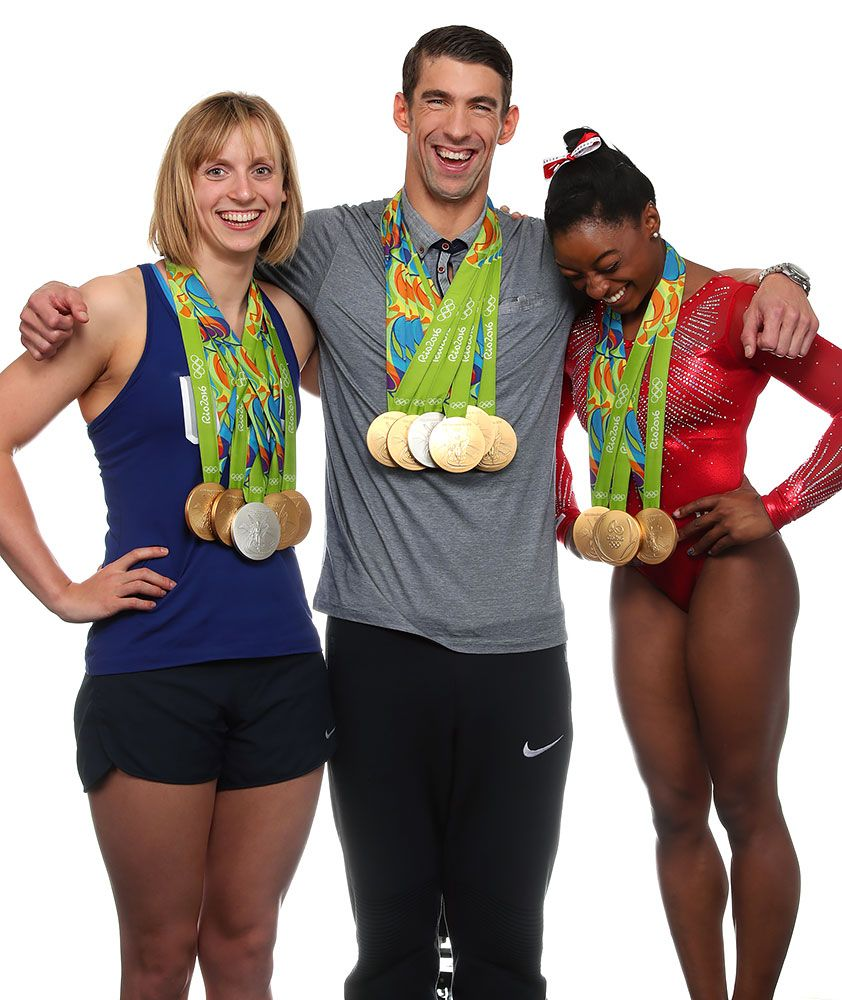
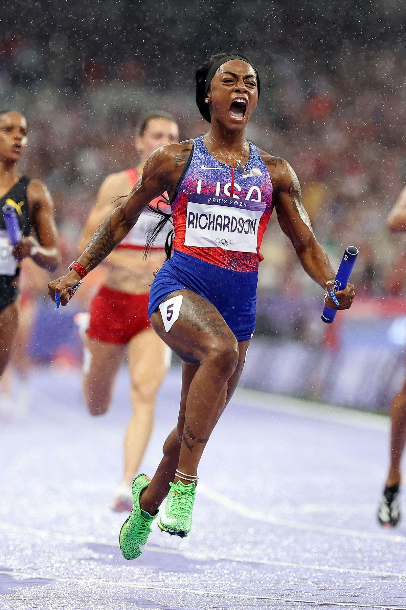
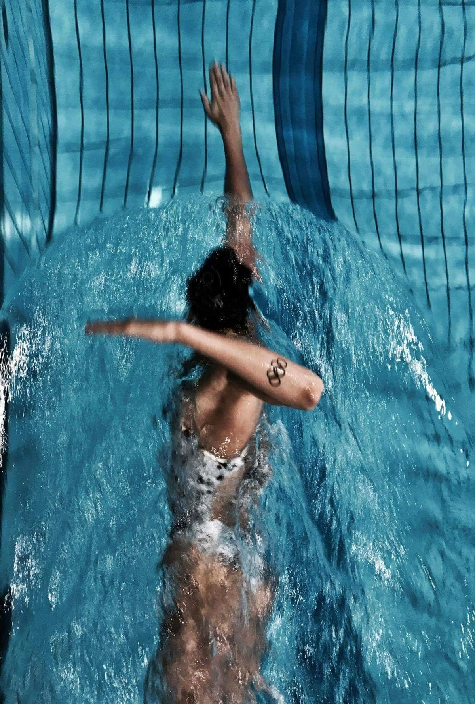
Recommended Reading
- The Inner Game of Tennis By Timothy Gallwey
- Can't Hurt Me By David Goggins
- The Champion's Mind: How Great Athletes Think, Train, and Thrive By Dr. Jim Afremow
Stay Inspired
Follow these accounts to keep your mental game sharp every day, and if you're a tennis player, there are some suggestions.